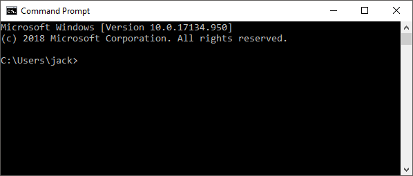
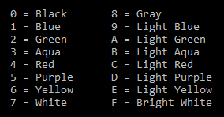

Introduction
Welcome to CMD for Dummies! This is a short "course" as such that should get you up and running with some basic CMD commands. By the end of this, you should be able to:
- Understand what the command prompt is
- Open the command prompt
- Personalize the command prompt
- Manipulate files and directories
- Shut down the computer
All of this through the command prompt!
NOTE:The course assumes you're using a Windows computer. Any modern version will do, but make sure you have one before proceeding!
Let's get started!
What is the Command Prompt?
CMD, or Command Prompt, is a program on your computer, installed by default. It's commonly known as a terminal emulator. Its main purpose is to open terminal windows.
Terminal windows allow you to access the CLI (Command Line Interface). This is vital for our purposes.
A CLI is a little harder to use than a GUI (Graphical User Interface, which you are using to view this website currently), as they require more knowledge to use. The only thing you can do in a CLI is type in commands, unlike a GUI where you can click on multiple options and make a lot of selections.
Open Command Prompt
PressWin + R together. A box like this should appear:
Type cmd into the box, then press Enter .
You'll then be greeted with this box:
Welcome to CMD! Let's get started. The name "jack" will be replaced by your username when you open CMD for yourself.
Personalise Command Prompt
A bit plain though, no? Let's spice it up (if only a little!) with some colour. Here's a list to choose from:
Enter color , followed by a combination of two of these numbers/Letters, into the terminal window, then press Enter.
IMPORTANT: The first digit is for the foreground and the second digit is for the background.
If done correctly, your text/background should change to your chosen colour!
Here's an example with color 5f.
Ooh, fancy!
You can also enter a single digit to change the colour of the text ONLY.
Now that we've made CMD our own, let's move on to some of its functionalities.
Shutdown
For our last trick, simply type shutdown into CMD. I'm sure you can guess what happens next!